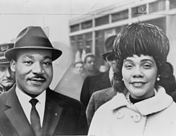

(Martin Luther King Jr.; Atlanta, 1929 - Memphis, 1968) Pastor baptista estadounidense, defensor de los derechos civiles. La larga lucha de los norteamericanos de raza negra por alcanzar la plenitud de derechos conoció desde 1955 una aceleración en cuyo liderazgo iba a destacar muy pronto el joven pastor Martin Luther King. Su acción no violenta, inspirada en el ejemplo de Gandhi, movilizó a una porción creciente de la comunidad afroamericana hasta culminar en el verano de 1963 en la histórica marcha sobre Washington, que congregó a 250.000 manifestantes. Allí, al pie del Lincoln Memorial, Martin Luther King pronunció el más célebre y conmovedor de sus espléndidos discursos, conocido por la fórmula que encabezaba la visión de un mundo justo: I have a dream (Tengo un sueño).
Obra e ideario
Martin Luther King entendió como una condición esencial de la dignidad humana la igualdad racial, la cual se hallaba por otra parte legitimada, en el plano político, por los principios de la democracia (de la cual siempre se declaró partidario), y en el plano moral, por los principios religiosos. En consecuencia, la acción destinada a la conquista de los propios derechos no debía ser considerada jamás como subversiva ni revolucionaria. King no proclamaba la violación de la ley, sino que sostenía que no pueden obedecerse leyes injustas, porque éstas se oponen a la ley moral. Señalaba el camino del amor en contraposición a la inactividad de los negros pasivos y al odio exasperado de los nacionalistas. Y se dolía de no haber sido ayudado y comprendido por la iglesia blanca.
I have a dream

Pese al valor de su obra escrita, ninguno de sus textos despertó la universal admiración del más famoso de sus discursos: el que pronunció el 28 de agosto de 1963 ante los 250.000 integrantes de la marcha sobre Washington, al pie del Monumento a Abraham Lincoln, el presidente que, un siglo antes, había abolido la esclavitud: "Hace cien años, un gran americano, bajo cuya sombra simbólica nos encontramos hoy, firmó la Proclamación de la Emancipación. Este trascendental decreto apareció como un gran fanal de esperanza para millones de esclavos que habían sido marcados con el fuego de una flagrante injusticia. Llegó como el amanecer jubiloso de la larga noche de su cautividad. Pero cien años después, la América de color sigue sin ser libre."